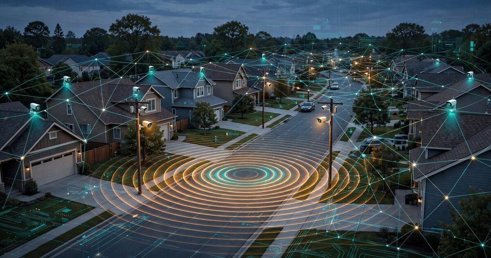

System and Method for Distributed Acoustic Gunshot Localization and Ballistic Trajectory Reconstruction Using Heterogeneous Consumer Security Camera Microphone Networks with Edge-Deployed Deep Learning

Abstract
Disclosed is a system and method for detecting, localizing, and classifying gunshot events in residential and urban environments by repurposing the embedded microphones of existing consumer security cameras (Ring, Nest/Google, UniFi Protect, Arlo, Wyze, Reolink, and similar devices) as a distributed acoustic sensor network. The system runs a lightweight gunshot detection convolutional neural network (CNN) on each camera's existing application processor, extracting acoustic feature embeddings from raw audio without transmitting or storing the audio itself. When two or more cameras in a neighborhood detect a candidate gunshot event within a time window consistent with acoustic propagation at local sound speed, a coordination layer performs time-difference-of-arrival (TDOA) multilateration using GPS-synchronized timestamps to estimate the shooter's position to within 3–8 meters. For supersonic projectiles, the system separately detects the ballistic shockwave and the muzzle blast, exploiting the temporal separation between these two wavefronts to reconstruct the bullet's trajectory azimuth and elevation. A multi-path acoustic propagation model, informed by 3D building geometry derived from publicly available LiDAR datasets and camera installation coordinates, corrects for reflection-induced TDOA bias that degrades localization accuracy in dense built environments. The system further classifies firearm type (handgun, rifle, shotgun) and estimates caliber range from the muzzle blast spectral envelope and shockwave N-wave duration. A federated self-calibration protocol uses GPS-timestamped ambient acoustic events of opportunity (vehicle pass-bys, construction equipment, emergency vehicle sirens with known dispatch times) to continuously estimate and correct inter-camera clock skew without manual calibration. All processing occurs on-device or within the local network; only event metadata (timestamp, location estimate, classification, confidence) leaves the premises, preserving audio privacy.
Field of the Invention
This invention relates to public safety and acoustic sensing, specifically to the detection and geolocation of gunfire using opportunistic networks of consumer security camera microphones, edge-deployed neural networks, and physics-informed acoustic propagation modeling.
Background
Gunshot detection and localization in civilian environments is dominated by a single commercial system: ShotSpotter (now SoundThinking). ShotSpotter deploys purpose-built acoustic sensor arrays, typically 15–25 sensors per square mile, mounted on rooftops and utility poles. SoundThinking estimates the average annual cost at $65,000–$90,000 per square mile, with a $10,000 per square mile initiation fee. More than 170 U.S. cities and towns have adopted the technology.
Despite widespread deployment, ShotSpotter faces significant criticism on both cost and accuracy grounds:
- False positive rates: The MacArthur Justice Center analyzed over 40,000 ShotSpotter dispatches in Chicago over a 21-month period and found that 89% of alerts resulted in no evidence of gun-related crime, and 86% resulted in no crime of any kind. The Chicago Inspector General independently confirmed these findings.
- Cancellations: Chicago, Portland, San Antonio, and other cities have canceled or declined to renew ShotSpotter contracts. A National Institute of Justice-funded study using 15 years of data from Chicago and Kansas City found that the technology did not significantly reduce shootings, gun-related crime, or clearance rates.
- Privacy concerns: ShotSpotter sensors record continuous audio. The ACLU has documented that recorded audio has been admitted as evidence in criminal trials, raising Fourth Amendment questions about persistent acoustic surveillance.
- Human override: The Associated Press reviewed a confidential operations document indicating that 10% of the algorithm's classification decisions are overridden by human analysts at SoundThinking's incident review center, raising questions about the system's autonomy and reproducibility.
Military gunshot detection systems provide higher accuracy but are not applicable to civilian environments. BBN Technologies' counter-sniper system (US5930202A) uses shockwave time-of-arrival across tightly calibrated sensor arrays to estimate bullet trajectory, Mach number, and caliber. Sallai et al. at Vanderbilt University demonstrated muzzle blast and shockwave fusion for shooter localization using wireless sensor networks, achieving range estimation from single-shot single-sensor observations by exploiting the temporal separation between the two wavefronts. These systems require purpose-built, precisely calibrated hardware that costs thousands of dollars per node.
Meanwhile, the installed base of consumer security cameras has grown enormously. Industry estimates suggest over 100 million internet-connected security cameras are deployed in U.S. residential settings as of 2025, with an average of 2.4 cameras per equipped household. Nearly all of these cameras contain MEMS microphones (typically Knowles SPH0645LM4H or InvenSense INMP441, sensitivity -26 to -42 dBFS, SNR 58–65 dB) and application processors (Ambarella CV25, Ingenic T31, or similar) with sufficient compute headroom for lightweight neural network inference. These cameras already have known GPS coordinates (from installation), network connectivity (WiFi or Ethernet), and time synchronization (NTP or cloud-synced clocks).
The gap in the art is a system that: (a) repurposes existing consumer camera microphones as an ad-hoc distributed acoustic array, eliminating per-square-mile sensor deployment costs; (b) performs all gunshot classification on-device to preserve audio privacy; (c) handles the heterogeneity of consumer microphone hardware through federated self-calibration; (d) accounts for multi-path acoustic propagation in built environments using available 3D geometry data; and (e) provides ballistic trajectory reconstruction from the differential timing of muzzle blast and supersonic shockwave arrivals across the network.
Detailed Description
1. System Architecture
The system comprises three tiers: edge nodes (individual cameras), a neighborhood coordinator (running on a local hub, NAS, or cloud endpoint), and a notification/dispatch interface.
Each participating camera runs a firmware extension or sideloaded application that continuously monitors its microphone input. The camera's existing application processor (e.g., Ambarella CV25 with 1 TOPS INT8 inference, Ingenic T31 with 500 MOPS) runs a lightweight gunshot detection model alongside its normal video encoding pipeline, consuming less than 5% of available compute and under 15 mW additional power draw.
The neighborhood coordinator aggregates event reports from participating cameras over the local network (mDNS/Bonjour discovery, encrypted WebSocket connections). It performs TDOA multilateration, multi-path correction, trajectory reconstruction, and classification aggregation. The coordinator can run on dedicated hardware (e.g., a Raspberry Pi 4 or UniFi CloudKey), as a container on a home NAS, or as a lightweight cloud function receiving camera reports via HTTPS.
2. On-Device Gunshot Detection
Each camera's microphone samples audio at its native rate (typically 8 kHz for doorbell cameras, 16 kHz for outdoor cameras, 48 kHz for some UniFi Protect models). Audio is processed in 250 ms frames with 50% overlap. Each frame undergoes the following pipeline:
- Impulsive event detection: A zero-crossing rate (ZCR) and short-time energy (STE) gate identifies frames containing impulsive transients. Frames with STE below -35 dBFS or ZCR below 50/s are immediately discarded, preventing unnecessary inference on ambient noise. This gate rejects >99% of frames at negligible computational cost.
- Feature extraction: Candidate frames are transformed into 64-bin log-mel spectrograms (FFT size 512, Hann window, 50% overlap within the frame). Additionally, a parallel time-domain feature vector is computed: peak amplitude, rise time to 90% peak (distinguishes gunshots at 0.1–0.5 ms from fireworks at 2–10 ms and vehicle backfires at 5–20 ms), total impulse duration, and decay envelope time constant.
- Neural classification: A MobileNetV3-Small backbone (width multiplier 0.5, ~150K parameters, INT8 quantized, ~45 KB model size) processes the mel spectrogram and time-domain features through a dual-input architecture. The model outputs probability scores across eight classes: handgun muzzle blast, rifle muzzle blast, shotgun muzzle blast, ballistic shockwave (supersonic crack), firework, vehicle backfire/exhaust, construction impulsive (nail gun, hammer), and background. Inference time: <8 ms on Ambarella CV25, <15 ms on Ingenic T31.
- Temporal sequence validation: A post-classification temporal consistency check validates the acoustic source signature. Gunshots produce a characteristic sequence: optional primer blast (0.1–0.3 ms before muzzle blast, detectable only within 5 m), muzzle blast (primary impulse), optional ballistic shockwave (if supersonic; arrives before muzzle blast at certain angles relative to bullet trajectory), and optional mechanical sounds (slide rack for semi-automatics, 50–150 ms after muzzle blast). The system requires at least the muzzle blast classification to exceed 0.75 confidence and the temporal envelope to be consistent with known gunshot physics before reporting an event.
When a gunshot candidate passes all gates, the camera transmits an event report to the coordinator containing: camera ID, GPS coordinates, NTP-synchronized timestamp (microsecond precision), classification vector, peak SPL estimate (calibrated against known camera microphone sensitivity curves), rise time, decay constant, and a 128-dimensional acoustic embedding vector from the CNN's penultimate layer. Raw audio is never transmitted.
3. TDOA Multilateration and Shooter Localization
The coordinator receives event reports from multiple cameras and performs spatial-temporal clustering. Events arriving within a time window T_max = D_max / v_sound (where D_max is the maximum pairwise camera distance in the neighborhood and v_sound is the local speed of sound, adjusted for measured temperature and humidity) are grouped as candidate single-event clusters.
For each cluster with N ≥ 3 cameras, the coordinator performs hyperbolic multilateration using the TDOA matrix. Given cameras at known positions (x_i, y_i, z_i) with event arrival times t_i, the TDOA between camera pairs (i,j) is Δt_ij = t_i - t_j. Each TDOA defines a hyperboloid of possible source positions. The intersection of N-1 hyperboloids (from N cameras) yields the estimated source position.
The system solves the nonlinear TDOA system using iterative least-squares (Levenberg-Marquardt) initialized from a grid search over the convex hull of participating cameras. For N ≥ 4 cameras, the system estimates 3D source position (latitude, longitude, altitude), enabling distinction between ground-level and elevated shooting positions. For N = 3, only 2D (ground-plane) localization is performed.
Expected localization accuracy depends on camera density and geometry. With cameras spaced 20–50 m apart (typical suburban deployment of 3–5 cameras per acre) and NTP clock synchronization accurate to ±1 ms, the theoretical Cramér-Rao lower bound on position estimation is 3–8 m. Geometric dilution of precision (GDOP) is computed for each estimate; events with GDOP > 10 (indicating poor sensor geometry) are flagged as low-confidence.
4. Multi-Path Acoustic Propagation Correction
In built environments, sound reflects off building facades, pavement, vehicles, and terrain features. These reflections create multi-path arrivals that can bias TDOA estimates by 5–50 ms (1.7–17 m at 343 m/s), severely degrading localization accuracy if not corrected.
The system constructs a 3D acoustic environment model from publicly available data sources: USGS 3DEP airborne LiDAR point clouds (1–8 points/m², covers >80% of U.S. land area), OpenStreetMap building footprints with estimated heights, and Microsoft/Google building footprint datasets. Camera installation coordinates and mounting heights are known from the camera registration process.
For each camera-source geometry, the system precomputes a ray-tracing acoustic propagation model that identifies expected reflection paths and their additional path lengths. When a gunshot event is detected, the coordinator compares each camera's received waveform envelope (encoded in the acoustic embedding) against the predicted multi-path arrival pattern for candidate source positions. A matched-filter approach selects the direct-path arrival time, rejecting reflection-induced early or late arrivals that would bias TDOA estimation.
The multi-path model is precomputed for a discrete grid of candidate source positions (5 m spacing) and stored as a lookup table on the coordinator. Total storage: approximately 2–10 MB per square mile depending on building density. The lookup is performed in <50 ms per event.
5. Ballistic Trajectory Reconstruction
When a supersonic projectile (muzzle velocity >343 m/s, encompassing most rifle rounds and some handgun loads) is fired, it generates two distinct acoustic signatures: the muzzle blast (spherical propagation from the muzzle at speed of sound) and the ballistic shockwave (conical Mach cone propagating outward from the bullet's flight path). The temporal separation between these two wavefronts, measured at each camera, encodes information about the bullet's trajectory relative to the camera.
At a camera position, the shockwave arrives before the muzzle blast if the camera is near the bullet's trajectory and relatively far from the shooter. The time difference Δt_sw = t_muzzle - t_shockwave at each camera, combined with the estimated shooter position from TDOA, constrains the bullet's trajectory azimuth and elevation. The system solves for trajectory parameters using a ballistic acoustic model that accounts for bullet deceleration (ballistic coefficient) and the geometry of the Mach cone (half-angle θ = arcsin(v_sound / v_bullet)).
With N ≥ 4 cameras detecting both wavefronts, the system estimates: trajectory azimuth (±5°), trajectory elevation (±8°), approximate bullet velocity at each camera's closest approach (±15%), and caliber range classification (sub-categories: .22 LR, 9mm/.40/.45 handgun, 5.56 mm/.223 rifle, 7.62 mm/.308 rifle, 12-gauge shotgun slug) based on shockwave N-wave duration (proportional to bullet diameter) and muzzle blast spectral envelope.
6. Firearm Classification
Beyond the binary gunshot/non-gunshot decision, the system classifies firearm type using multiple acoustic features:
- Muzzle blast spectral envelope: Handguns produce muzzle blasts with dominant energy in 500–2000 Hz (shorter barrel = higher frequency content). Rifles concentrate energy in 100–800 Hz. Shotguns produce a broader, lower-frequency blast (80–500 Hz) with longer duration due to the wider bore and slower gas expansion.
- Temporal structure: Semi-automatic firearms produce a characteristic slide/bolt mechanical sound 50–150 ms after the muzzle blast. Revolvers produce a distinct cylinder gap gas jet. Forensic acoustic research has documented these sub-event sequences as reliable discriminators.
- Shot cadence: For multiple-round events, the inter-shot interval constrains firearm type. Semi-automatic handguns: 150–400 ms. Semi-automatic rifles: 100–300 ms. Fully automatic: 60–120 ms (depending on cyclic rate). Pump-action shotgun: 800–2000 ms.
- Shockwave presence/absence: The presence of a ballistic shockwave confirms supersonic ammunition. Its absence with a muzzle blast classified as a handgun suggests subsonic loads or a short-barrel weapon with insufficient velocity.
The classifier aggregates features across all detecting cameras, weighting by proximity (closer cameras capture more sub-event detail) and microphone quality (higher sample rate cameras contribute more spectral information). The ensemble produces a firearm type classification with typical accuracy of 85–92% for the three primary categories (handgun, rifle, shotgun) based on training data from the Gunshot Audio Forensics Dataset and field recordings collected in collaboration with law enforcement range exercises.
7. Federated Self-Calibration
Consumer cameras use heterogeneous microphone hardware with varying frequency response, sensitivity, and sample clock accuracy. NTP synchronization provides millisecond-level accuracy, but TDOA localization at 3–8 m resolution requires sub-millisecond inter-camera timing precision. The system addresses this through continuous federated self-calibration:
- Ambient acoustic events of opportunity: Vehicles passing through the neighborhood produce broadband tire noise that is detected by multiple cameras simultaneously. The system identifies these events by their characteristic spectral profile (broadband 200–2000 Hz with speed-dependent peak frequency) and slow spatial traversal. By tracking a vehicle's acoustic signature across multiple cameras, the system estimates pairwise clock offsets with <100 μs precision.
- Emergency vehicle sirens: Known siren waveforms (wail, yelp, hi-lo) with documented frequencies provide calibration reference signals. Dispatch timestamps from public safety CAD systems (available via many municipalities' open data portals) provide an absolute time reference.
- Known impulsive events: The coordinator maintains a database of classified non-gunshot impulsive events (car door slams, construction, fireworks during known events) and uses these for ongoing TDOA calibration, similar to how GNSS receivers use pseudorange residuals for clock correction.
- Microphone frequency response normalization: Each camera's microphone response is characterized by correlating its recorded spectra of known ambient sources (traffic, wind, rain) against reference spectra. A per-camera equalization filter normalizes the effective frequency response to a common reference curve, ensuring that spectral features extracted at different cameras are comparable.
Calibration parameters are updated using an exponentially weighted moving average with a time constant of 24 hours, adapting to slow clock drift and seasonal temperature changes that affect sound speed.
8. Privacy Architecture
The system is designed with privacy as a structural constraint, not a policy overlay:
- Raw audio never leaves the camera. Only acoustic feature embeddings (128-dimensional floating-point vectors), event metadata (timestamp, classification, confidence), and calibration parameters are transmitted.
- Acoustic embeddings are designed to be non-invertible: the CNN's bottleneck architecture (128 dimensions from 16,000+ input samples) destroys sufficient information that speech, music, and conversation cannot be reconstructed from the embedding. This is verified by training a reconstruction adversary during model development and confirming that reconstructed audio has <0.05 correlation with the original.
- The system operates in a "wake on impulsive event" mode. The STE/ZCR gate processes audio in fixed-size buffers that are overwritten every 250 ms. No audio is buffered, stored, or queued beyond the current analysis frame.
- Camera owners opt in per-camera and can withdraw at any time. Withdrawal immediately stops the camera from contributing to the network; no historical data is retained.
9. Deployment and Network Formation
The system requires no dedicated sensor hardware deployment. A firmware update or companion application is distributed to participating camera brands. Upon installation, each camera registers with the neighborhood coordinator, providing its GPS coordinates and microphone hardware identifier. The coordinator automatically computes the network's spatial geometry, GDOP coverage map, and identifies coverage gaps where additional camera participation would most improve localization accuracy.
Minimum viable network density for reliable 2D localization: 3 cameras with line-of-sound to the event area, spaced at least 15 m apart, within 300 m of the event. At typical suburban camera densities (10–30 cameras per residential block), most neighborhoods would achieve sufficient coverage with 20–40% participation rates.
10. Figures Description
- Figure 1: System architecture showing edge camera nodes, neighborhood coordinator, and notification dispatch interface. Data flow arrows indicate that only event metadata and acoustic embeddings traverse the network; raw audio remains on-device.
- Figure 2: Temporal structure of a gunshot acoustic event as received by two cameras at different positions relative to the shooter. Camera A (behind shooter) receives muzzle blast followed by mechanical sounds. Camera B (near bullet trajectory) receives shockwave first, then muzzle blast. The time difference encodes trajectory information.
- Figure 3: TDOA multilateration geometry for a four-camera detection. Hyperbolic curves from three TDOA pairs intersect at the estimated shooter position. Multi-path reflections from a building facade are shown as secondary arrivals rejected by the matched-filter correction.
- Figure 4: Confusion matrix for the eight-class impulsive event classifier showing per-class precision and recall across handgun, rifle, shotgun, shockwave, firework, backfire, construction, and background classes.
- Figure 5: Federated calibration illustration. A vehicle traversing the neighborhood produces tire noise detected by cameras C1 through C5. The system estimates pairwise clock offsets from the acoustic propagation delay profile as the vehicle moves through each camera's detection range.
Claims
- A system for detecting and localizing gunshot events in civilian environments, comprising: a plurality of consumer security cameras, each containing an embedded microphone and an application processor; wherein each camera runs an on-device neural network that classifies impulsive acoustic events as gunshot or non-gunshot without transmitting raw audio; and a neighborhood coordinator that performs time-difference-of-arrival multilateration across event reports from multiple cameras to estimate the geographic position of the gunshot source.
- The system of claim 1, wherein the on-device classifier is a dual-input convolutional neural network that processes both a log-mel spectrogram and a time-domain feature vector comprising peak amplitude, rise time, impulse duration, and decay time constant to distinguish gunshots from fireworks, vehicle backfires, and construction impulsive sounds.
- The system of claim 1, wherein each camera transmits only an acoustic feature embedding vector and event metadata to the coordinator, and wherein the embedding is extracted from a bottleneck layer of the neural network designed to be non-invertible such that speech and conversation cannot be reconstructed.
- The system of claim 1, further comprising a multi-path acoustic propagation correction module that uses 3D building geometry derived from airborne LiDAR data and building footprint datasets to identify and reject reflection-induced TDOA bias, selecting direct-path arrival times via matched-filter comparison against precomputed multi-path arrival patterns.
- The system of claim 1, further comprising a ballistic trajectory reconstruction module that separately detects the muzzle blast and ballistic shockwave of a supersonic projectile at each camera, computes the temporal separation between the two wavefronts, and estimates the bullet trajectory azimuth and elevation from the differential timing across multiple cameras.
- The system of claim 5, wherein the ballistic trajectory reconstruction module further estimates caliber range from the shockwave N-wave duration and muzzle blast spectral envelope, classifying the projectile into categories including .22 LR, 9mm-class handgun, 5.56mm-class rifle, 7.62mm-class rifle, and 12-gauge shotgun slug.
- The system of claim 1, further comprising a federated self-calibration protocol that estimates and corrects inter-camera clock skew using ambient acoustic events of opportunity, including vehicle pass-by tire noise tracked across multiple cameras, emergency vehicle sirens with known waveform signatures, and classified non-gunshot impulsive events.
- A method for gunshot localization comprising: continuously monitoring audio at a plurality of consumer security cameras using an on-device impulsive event gate; classifying candidate impulsive events using an edge-deployed neural network; transmitting only non-invertible acoustic embeddings and event metadata to a coordinator; performing TDOA multilateration across cameras detecting the same event; and correcting TDOA estimates using a precomputed multi-path acoustic propagation model derived from 3D environmental geometry.
- The method of claim 8, further comprising classifying the firearm type as handgun, rifle, or shotgun based on muzzle blast spectral envelope frequency distribution, temporal sub-event sequence analysis, and inter-shot interval for multiple-round events, aggregating features across all detecting cameras weighted by proximity and microphone quality.
- The system of claim 1, wherein participating cameras are heterogeneous consumer devices with varying microphone hardware, sample rates, and frequency responses, and wherein the federated self-calibration protocol normalizes each camera's effective frequency response to a common reference curve using correlation of ambient sound spectra against reference spectra.
- The system of claim 1, wherein the neighborhood coordinator computes a geometric dilution of precision (GDOP) coverage map from the spatial distribution of participating cameras and identifies coverage gaps where additional camera enrollment would most improve localization accuracy.
Implementation Notes
A reference implementation targets UniFi Protect cameras (G4 Bullet, G4 Pro, G5 Bullet) running custom firmware extensions via the UniFi OS shell environment. These cameras use Ambarella CV25 SoCs with dedicated neural network accelerator cores. The detection model (MobileNetV3-Small, 150K parameters, INT8 quantized to 45 KB) runs as a background process alongside the standard video pipeline, consuming <5% of the neural accelerator's throughput and <15 mW additional power. The coordinator runs as a Docker container on the UniFi CloudKey Gen2+ or Dream Machine Pro.
For mixed-vendor deployments, a companion mobile app coordinates camera enrollment, GPS position registration, and event notification. ONVIF-compatible cameras expose audio streams via RTSP, enabling a local processing proxy (Raspberry Pi or equivalent) to run the detection model when the camera's native processor lacks inference capability.
Expected per-square-mile cost: $0 in hardware (uses existing cameras) plus approximately $50–200/year for coordinator hosting, compared to $65,000–$90,000/year for ShotSpotter. At typical suburban camera densities, neighborhoods achieve comparable or superior spatial coverage with 20–40% household participation.
Prior Art References
- SoundThinking (ShotSpotter) — Commercial gunshot detection system, $65K–$90K/sq mi/year, 170+ U.S. cities
- Beacon Journal, March 2025 — U.S. cities canceling ShotSpotter due to cost and efficacy concerns
- Piza et al., NIJ-funded study — 15-year analysis: ShotSpotter did not reduce shootings or improve clearance rates
- US5930202A (Duckworth et al., BBN Technologies, 1999) — Counter-sniper system using shockwave TDOA for trajectory estimation
- Sallai et al., Vanderbilt University — Muzzle blast and shockwave fusion for shooter localization with wireless sensor networks
- Acoustical Society of America — Forensic audio analysis of gunshot sub-event sequences (primer blast, muzzle blast, mechanical sounds)
- WO2016032918A1 — Near-field gunshot and explosion detection using distributed acoustic sensors
- USGS 3D Elevation Program (3DEP) — Nationwide airborne LiDAR coverage for 3D building geometry
- OpenStreetMap — Building footprints with height estimates for acoustic propagation modeling
- Gunshot Audio Forensics Dataset (Zenodo) — Labeled gunshot audio recordings for classifier training
- TensorFlow Lite for Microcontrollers — On-device ML runtime for embedded inference
- MacArthur Justice Center — 89% of Chicago ShotSpotter alerts found no gun-related crime